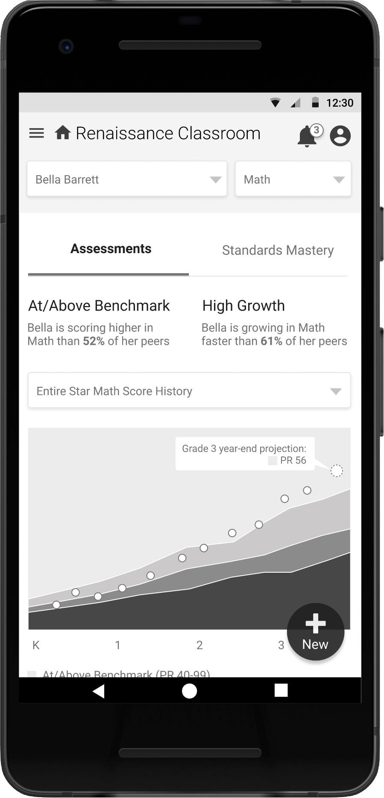
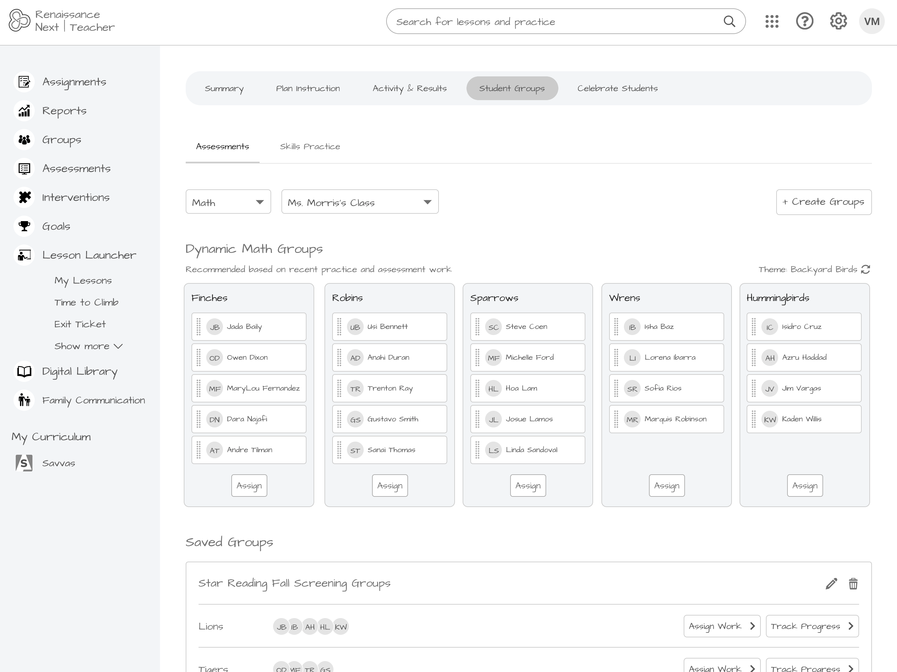
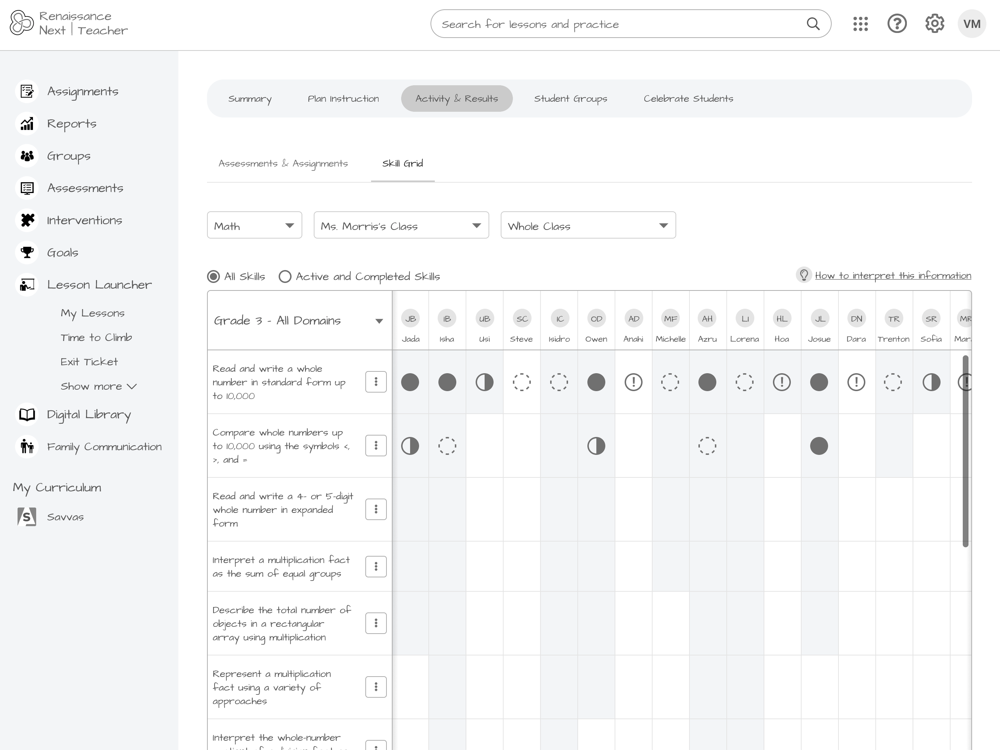
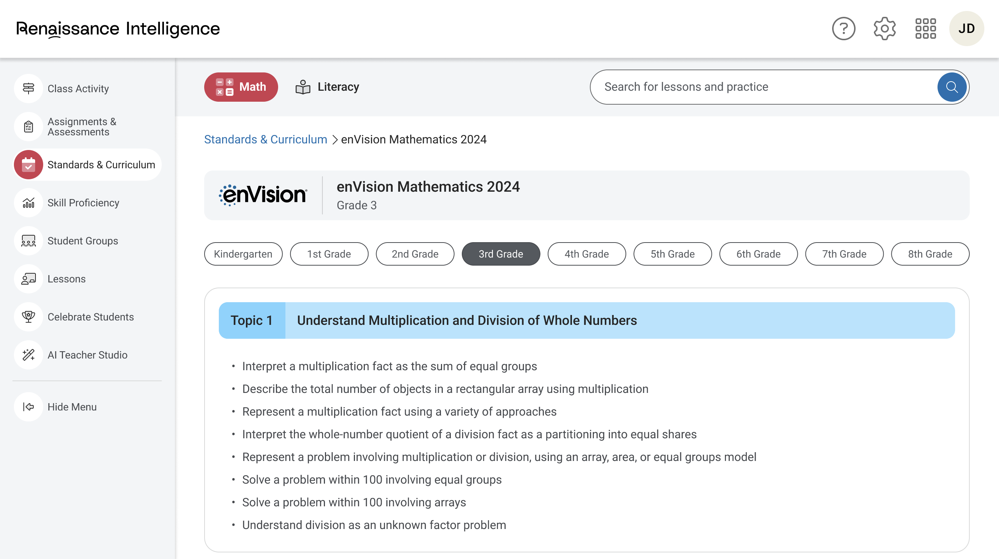
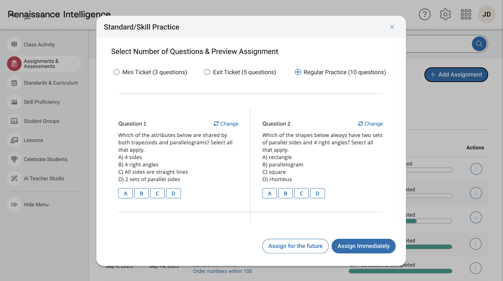

Renaissance Next / Renaissance Intelligence
Four years ago, Renaissance set out to build something that didn't yet exist in K–12 education: a unified platform that would connect the company's suite of assessment, instruction, and practice tools into a single, coherent experience for teachers and leaders. That platform became Renaissance Next. More recently, Next has evolved into Renaissance Intelligence—now being positioned as the industry's first Education Intelligence System. I've been at the center of both efforts, moving from sole designer to design lead as the scope of the work has grown.
Renaissance's product portfolio spans decades and multiple acquisitions. Star assessments. Nearpod. Freckle. Accelerated Reader. Each product has its own history, its own data model, its own user base, and its own team. Getting them to talk to each other—not just technically, but experientially—is genuinely hard. Renaissance Next was the first serious attempt to do it.

Building the Foundation
In the early years, the work was mostly mine to define. That meant figuring out what "unified" actually looks like when you're starting from a collection of products that were never designed to work together. What does a teacher need to see when they come to Renaissance first thing in the morning? What does a district leader need to understand about what's happening across dozens of schools? Where do the data connections between assessment and instruction actually matter, and where are they just noise?
A lot of that early work involved resisting the temptation to just show everything. Each individual product team had ideas about what should be surfaced in the shared platform, and most of those ideas were reasonable in isolation. The design challenge was finding the through-line—the smallest, most coherent set of things that would make the platform feel genuinely useful rather than just a new navigation wrapper over old experiences.
Running alongside that work from the beginning was a commitment to WCAG accessibility standards—not as a compliance checkbox, but as a baseline expectation for everything we ship. K–12 education software serves students and educators with a wide range of abilities, and Renaissance Next needed to get this right. Enforcing that standard across a platform built on top of products with varying levels of accessibility maturity has required persistent advocacy, documentation, and, occasionally, difficult conversations about what "done" means.
Similarly, the platform exposed just how fragmented our design language had become across product lines. Part of the foundational work became evangelizing a unified design system—pushing for shared components, consistent patterns, and a common visual language that could span products built years and acquisitions apart. Getting individual product teams to adopt shared standards when they've each developed their own ways of doing things is its own kind of design work. It requires making the case repeatedly, finding allies, and demonstrating the value concretely rather than just asserting it.
Evolving Into Renaissance Intelligence
As Renaissance Next matured, it became clear that the real opportunity was not just connecting existing products, but using the connections between them to do something new. Assessment data could inform instruction in real time. Groupings could be generated dynamically based on skill gaps. AI could surface the right resource for the right student at the right moment—without requiring the teacher to dig for it. That vision became Renaissance Intelligence.
The scope of the effort also changed what my job needed to be. A platform integration of this scale requires multiple designers working in parallel on different pieces—formative assessment, grouping and recommendations, lesson delivery, progress monitoring, leader analytics. I took on the initial work of creating low-fidelity wireframes to establish the integration points, the information architecture, and the logic connecting the pieces. Then, working with Product and Engineering, I helped shape what was actually achievable within the timeline and the technical constraints. Now, individual designers own their areas of the platform while I stay involved across the full effort—reviewing work, maintaining coherence across workstreams, and continuing to push on the harder structural questions.


What Makes This Hard
The interesting design challenges here are not the typical ones. The individual features are complex, but they're the kind of complex that experience and process can handle. The harder problems are the ones that live between features and between teams.
How do you create a coherent teacher experience when the underlying products were built by different organizations with different design languages? How do you introduce AI-driven recommendations in a way that teachers trust and can act on, rather than ignore or work around? How do you design for district leaders who need to see patterns across thousands of students without designing something so abstract it loses meaning? And how do you make decisions about what gets integrated first when every team believes—reasonably—that their piece is the most important one?
That last question points to one of the most persistent challenges of the whole effort: alignment. When you're working across multiple product teams, each with their own roadmaps, their own stakeholders, and their own opinions about how things should work, the design decisions that seem straightforward on paper rarely stay that way. Getting buy-in is not a one-time event. It's a continuous process of communication, documentation, and re-explanation as people rotate, priorities shift, and the details get harder. The real risk is not that someone disagrees with a decision—it's that teams quietly diverge and you don't catch it until the inconsistencies are already built. A significant part of the leadership work on this project has been creating the conditions for people to keep rowing in the same direction, even when the current is pulling them apart.



There are no clean answers to any of these. The work is ongoing, and honestly, some of the most important decisions are still ahead of us. But after four years, we have a platform that teachers and leaders are actually using, a clear vision for where it's going, and a design system and process that can support what it's becoming.